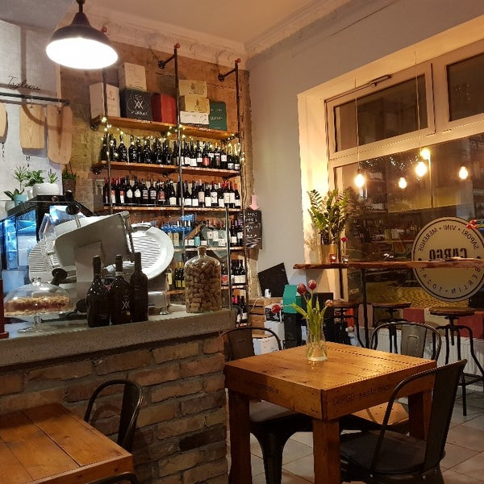
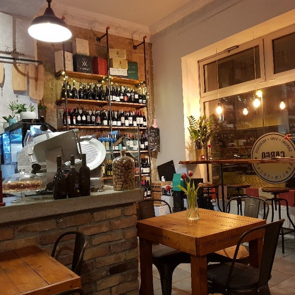

Cornettos salgados e doces, brioches e bolos desde a hora do pré-almoço, que são combinados com um delicioso cappuccino, café, chá ou sucos. Do almoço ao jantar com um belo panino gourmet, rigorosamente preparado no momento. Frios, queijos, aperitivos em azeite de origem italiana garantida, aperitivos quentes e frios e vários tipos de bruschette, focaccia ou burrata acompanhados por um excelente copo de vinho, Aperol Spritz, Prosecco ou uma deliciosa cerveja. Jantar com clássicos pastéis italianos, sempre acompanhados de licores de própria produção.
De segunda à sexta: 12:00 às 22:00
De domingo: 17:00 às 22:00
Gabi Rodrigues:
Lugar e ambiente agradáveis, pessoas agradáveis, boa música e ótimo serviço (a garota no serviço preparada e amigável), excelente chef (Carlo)
Nota:
Robin Parker:
Como um morador do bairro, estou emocionado e feliz em dizer que este lugar pertence aos melhores, mais frescos e mais charmosos lugares italianos que você pode encontrar em Berlim. Aproveite tudo - totalmente recomendado! 😍👍
Nota:
Martina Lutteri:
Maravilhoso! Aqui você se sente na Itália! A comida é muito saborosa, ainda mais as pizzas e o espaguete! Há muita coisa para descobrir e experimentar e tudo a preços razoáveis. Além de tudo ser coberto pelo serviço muito amigável! Bravo! 👏 Voltarei outras vezes com certeza!!!
Nota:
 Clique aqui para expandir o cardápio
Clique aqui para expandir o cardápio
https://www.cargogastronomia.de/
Samariterstraße 37 10247 Berlim, Alemanha